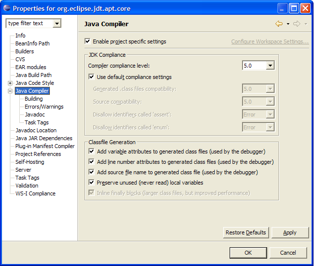
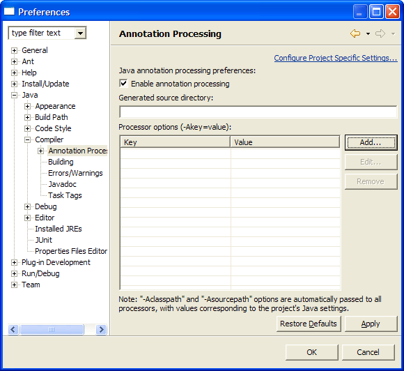
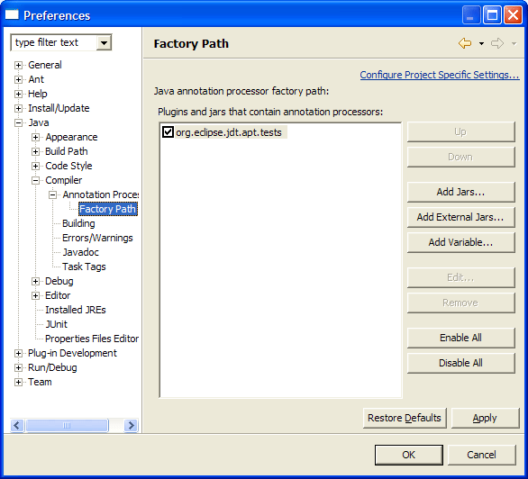

The APT plugin adds Java 5 annotation processing support to Eclipse, by running annotation processors written to use the Mirror APIs inside Eclipse.
These annotation processors will then get triggered as you type inside Eclipse, provide errors and warnings directly inside the editor, and producing normal build artifacts just as if you were running Sun's apt tool from the commandline.
For more detailed information about how the plugin works, you can view the JDT-APT project web site.

Next you need to enable annotation processing under Java->Compiler->Annotation Processing:

In this dialog you can also specify the generated source directory if desired, and provide any processor options that are necessary.
Note: "-Aclasspath" and "-Asourcepath" options are automatically passed to all your processors by eclipse, so it is unnecessary to provide those.

To do this, we support classpath variables inside of processor options. Variables must be delimited on both sides by %, and must be the first segment of a path.
So, if FOO is a classpath variable that points to d:/foo, then %FOO%/bar.txt will resolve to d:/foo/bar.txt. Classpath resolution depends on the existence of the classpath variable; if it doesn't exist, the raw string will be added to the environment options. However, bar.txt (in this example) does not need to exist.
The reserved variable ROOT is given special meaning: it is the workspace root, and introduces a project resource. So, for instance, if quux is the name of a project, then %ROOT%/quux will resolve to the absolute path of quux and % ROOT%/quux/.classpath will resolve to the absolute path to quux/.classpath. When using ROOT, the first segment of the path must actually exist: in the example, the project quux must exist, but .classpath need not.